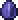

The Eater of Worlds is a colossal worm with 10,050 / 15,120 / 19,224 health in total on the PC version PC version, Console version Console version, Mobile version Mobile version, and tModLoader version tModLoader version, and 7,500 / 10,500 health on the Old-gen console version Old-gen console version, Windows Phone version Windows Phone version, Old Chinese version Old Chinese version, Nintendo Nintendo 3DS version version, and tModLoader 1.3-Legacy version tModLoader 1.3-Legacy version. It awakens after every third Shadow Orb is broken or after Worm Food is used. Shadow Orbs are found in the Corruption chasms, surrounded by Ebonstone, which requires a pickaxe with 65% pickaxe power or higher to mine, although explosives or Purification Powder can be used to bypass this. Once within range, Shadow Orbs can be destroyed with a hammer or explosives. The Eater of Worlds can only be summoned in worlds containing Corruption, and can be summoned at any time of the day. If it manages to escape the Corruption, it will flee and disappear. Eater of Worlds is a large worm-type enemy that travels through tiles, and is made up of multiple sections that can each attack separately when cut off. To defeat it, every section must be brought down to less than two body parts to be killed (the smallest possible section is a head and a tail with no body pieces). Due to how helpful Corruption gear is, this will probably be the second boss faced in worlds that have Corruption, rather than those who have Crimson. The Eater of Worlds is the only source of Shadow Scales in the game, and it drops large amounts of Demonite Ore. They can be combined to make Shadow armor, but it can also be sold for almost 10 per stack of 99, making this technically the best pre-Hardmode boss for farming in the game. In Expert Mode, the boss is able to shoot dark-green projectiles at the player called Vile Spit, similar to those fired from Corruptors, another Corruption-exclusive enemy.

HP:10050
DAMAGE:??
AI: digs around
Shadow_Scale
 Demonite Ore
Demonite Ore
 Eaters Bone
Eaters Bone
 Healing Potion
Healing Potion
Eater of Worlds Mask
 Eater of Worlds Trophy
Eater of Worlds Trophy
 Dread Fang
Dread Fang